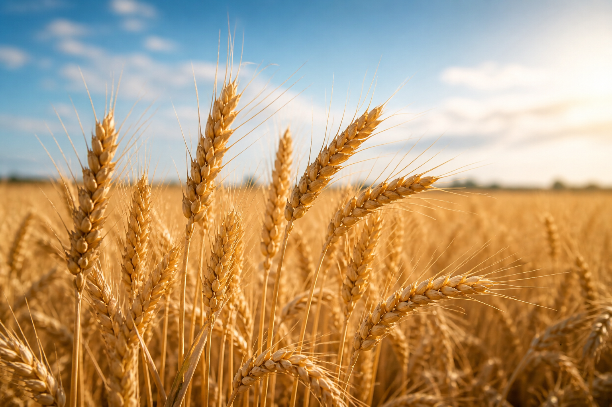

Wheat (scientifically known as Triticum aestivum) is one of the most important cereal crops in the world and is a staple food for a large part of the global population. It belongs to the grass family and is mainly grown in regions with moderate temperatures and low humidity. Wheat plants have long, slender stems and produce grain at the top in the form of spikes. The crop usually grows to a height of about 1 to 1.5 meters and takes around 3 to 4 months to mature. It is widely cultivated in countries like India, China, and Russia, with India being one of the leading producers.
Wheat is grown on more land area than any other food crop, covering about 220.4 million hectares (545 million acres) as of 2014. The global trade of wheat is also greater than that of all other crops combined.
Wheat is mainly used to make flour, which is then used to prepare a variety of foods such as bread, chapati, pasta, and biscuits. It is rich in carbohydrates and provides energy, along with some protein, fiber, and essential nutrients. The cultivation of wheat involves sowing seeds in well-prepared soil, usually during the winter season, and harvesting the crop when it turns golden and dry. It requires moderate rainfall and fertile soil for good growth.
